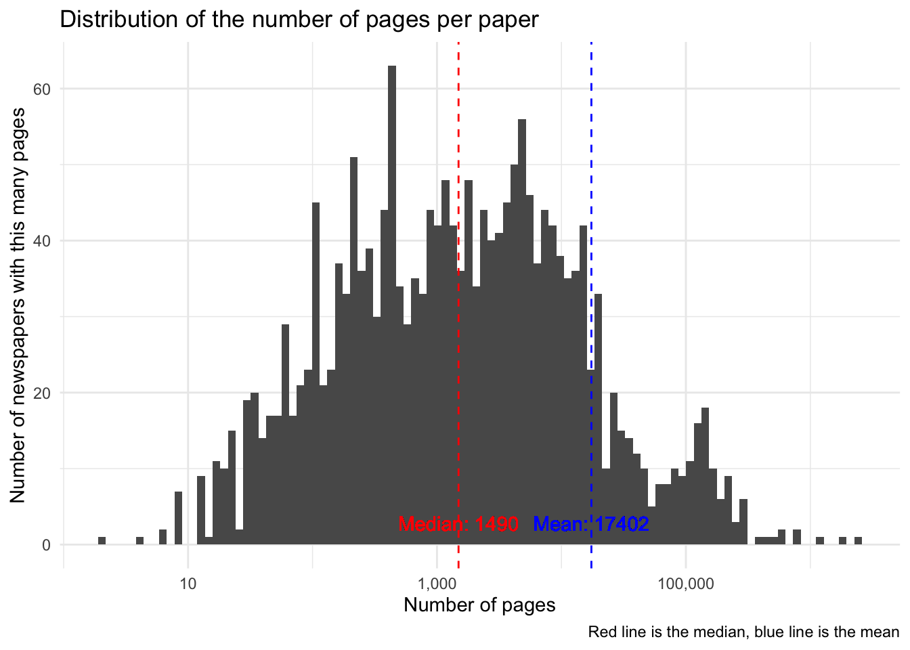
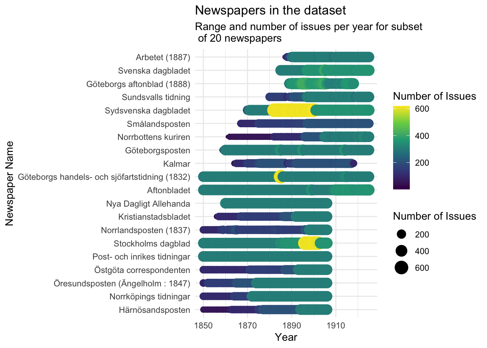

I have scraped the information on which newspapers are in the KB dataset, inlcuding all of the years which they have on the data.kb.se portal, not just the years that are outside of the copyright period. This is useful for understanding the dataset and for checking if there are any adverts for lediga platser / platssökande in the newspapers.
Load the data
The data is in the file data/processed/kb_newspapers_with_years_complete.json and is a list of dictionaries, each containing the name of the newspaper, the URL to the newspaper, the total number of pages, and a dictionary of years and the number of issues for that year.
Show the code
import jsonwithopen('/Users/jonathanjayes/Documents/PhD/newspapers-1/data/intermediate/kb_newspapers_with_years_complete.json') as f: data = json.load(f)# Flatten the dataflattened_data = []for newspaper in data:for year, issues_count in newspaper['issues_by_year'].items():if issues_count >0: flattened_data.append({'name': newspaper['name'],'url': newspaper['url'],'total_pages': newspaper['total_pages'],'year': int(year),'issues_count': issues_count })# Convert to DataFrameimport pandas as pddf = pd.DataFrame(flattened_data)# Display the first few rowsdf.head()# show the url of the final item in the dataframedf.iloc[-1]['url']# write to excel at /Users/jonathanjayes/Documents/PhD/newspapers-1/data/kb_newspapers_by_year.xlsxdf.to_excel('/Users/jonathanjayes/Documents/PhD/newspapers-1/data/processed/kb_newspapers_by_year.xlsx', index=False)
Show the code
# data is at data/kb_newspapers_with_years_complete.json# Load necessary librarieslibrary(tidyverse)library(readxl)library(gt)# Read the data from data/kb_newspapers_by_year.xlsxdf <-read_excel("/Users/jonathanjayes/Documents/PhD/newspapers-1/data/processed/kb_newspapers_by_year.xlsx")distinct_papers <- df %>%select(name, total_pages) %>%distinct()n_distinct_papers <-nrow(distinct_papers)
There are 1945 distinct papers in the dataset.
The distribution of the number of pages per papers is as follows:
Show the code
distinct_papers %>%ggplot(aes(x = total_pages)) +geom_histogram(bins =100) +scale_x_log10(# use scales package to format the x axis to numberslabels = scales::number_format(big.mark =",", decimal.mark ="."), ) +geom_vline(aes(xintercept =median(total_pages)), color ="red", linetype ="dashed") +geom_text(aes(x =median(total_pages), label =paste("Median:", round(median(total_pages), 2))),y =0,vjust =-1,color ="red" ) +geom_vline(aes(xintercept =mean(total_pages)), color ="blue", linetype ="dashed") +geom_text(aes(x =mean(total_pages), label =paste("Mean:", round(mean(total_pages), 0))),y =0,vjust =-1,color ="blue" ) +theme_minimal() +labs(title ="Distribution of the number of pages per paper",x ="Number of pages",y ="Number of newspapers with this many pages",caption ="Red line is the median, blue line is the mean" )

Count the number of different papers in the entire dataset, not just the years we are interested in.
But we care about the number of issues in our time period, let’s say 1850 to 1925.
Now we are counting the number of issues rather than the number of pages, where the number of pages per issue ranges between 2 and 8 depending on the year and the paper.
Show the code
library(ggridges)n_papers_in_period <- df %>%filter( year <=1925, year >=1850 ) %>%distinct(name) %>%nrow()df %>%filter( year <=1925, year >=1850 ) %>%mutate(decade =floor(year /10) *10) %>%group_by(name, decade) %>%summarise(issues_count_sum =sum(issues_count) /10 ) %>%ungroup() %>%ggplot(aes(x = issues_count_sum, y =factor(decade))) +geom_density_ridges(stat ="binline", bins =20, scale =0.95, draw_baseline =FALSE, fill ="midnightblue", alpha = .8) +scale_x_log10(# use scales package to format the x axis to numberslabels = scales::number_format(big.mark =",", decimal.mark ="."), ) +geom_vline(aes(xintercept =200), color ="red", linetype ="dashed") +theme_minimal() +labs(title ="Distribution of the number of issues per year",subtitle ="Grouped by decade in the period 1850-1925",x ="Number of issues per year",y ="Decade",caption ="Red line indicates 200 issues per year" )
There are 1326 papers in the period 1850-1925.
There are relatively few papers that have more than 200 issues per year in our sample.
Which are the largest papers by issue count in the period 1850-1925?
Show the code
top_20 <- df %>%filter( year <=1925, year >=1850 ) %>%group_by(name) %>%summarise(total_issues =sum(issues_count)) %>%arrange(desc(total_issues)) %>%head(20)top_20 %>%gt() %>%tab_header(title ="Largest 20 Papers by Issue Count",subtitle ="In the period 1850-1925" ) %>%cols_label(name ="Newspaper Name",total_issues ="Total Issues" ) %>%fmt_number(columns =c(total_issues),decimals =0 )
Largest 20 Papers by Issue Count
In the period 1850-1925
Newspaper Name
Total Issues
Aftonbladet
24,006
Sydsvenska dagbladet
23,995
Göteborgs handels- och sjöfartstidning (1832)
23,477
Göteborgsposten
20,320
Stockholms dagblad
20,172
Post- och inrikes tidningar
17,330
Nya Dagligt Allehanda
14,316
Öresundsposten (Ängelholm : 1847)
14,021
Svenska dagbladet
13,990
Norrköpings tidningar
13,336
Sundsvalls tidning
11,669
Arbetet (1887)
11,152
Göteborgs aftonblad (1888)
10,797
Norrbottens kuriren
10,772
Smålandsposten
10,219
Östgöta correspondenten
10,110
Kalmar
9,856
Kristianstadsbladet
9,752
Norrlandsposten (1837)
9,705
Härnösandsposten
9,635
Make a plot of the number of newspapers by year
Show the code
df %>%filter( year <=1925, year >=1850 ) %>%filter(name %in% top_20$name) %>%group_by(name) %>%mutate(avg_year =mean(year) ) %>%ungroup() %>%mutate(name =fct_reorder(name, avg_year) ) %>%ggplot(aes(x = year, y = name, size = issues_count, colour = issues_count)) +geom_point() +scale_colour_viridis_c() +theme_minimal() +labs(title ="Newspapers in the dataset",subtitle ="Range and number of issues per year for subset\n of 20 newspapers",x ="Year",y ="Newspaper Name",size ="Number of Issues",colour ="Number of Issues" )

Can we collect some more information about the papers that are in the dataset in 1900, including where they are published and if they are national or regional?
Hernösands-posten: some adverts, not regular place
KALMAR: some adverts, not regular place
KRISTIANSTADSBLADET: yes!
NORRLANDSPOSTEN: some adverts, there is a regular place, not a lot
NYA DAGLIGT ALLEHANDA: yes, regular place
SMÅLANDSPOSTEN: yes, regular place, quite a number
ÖRESUNDSPOSTEN: lots of adverts, regular place
Digitizing the data
I have made mad progress with how we can digitize the data.
There is a new tool called doclayout-yolo that can identify different layout components of even old newspapers, and it is much easier to use than LayoutParser from Melissa Dell and her team.
He splits the digitization of old periodicals into a few steps:
image preprocessing
breaking up the image into patches based on their content
passing these patches to a multimodal large language model instead of a traditional OCR model.
This overcomes the problem of the OCR model not being able to read the text in the image, and instead uses the multimodal model to understand the content of the image and extract the text.
In my testing, this works way better than traditional OCR models, and is much easier to use.
Have a look at the image below of a newspaper page from 1900, and the results of the doclayout-yolo model.
Getting the newspapers
I have also worked hard on scraping the newspaper images from data.kb.se, and I have a github repo and python script that can download the images from the KB website that runs online and in the background. I am really happy with it.
Next steps
The things I need to work on are the algorithm to decide on the best patch size for the images, and the best way to pass the patches to the multimodal model.